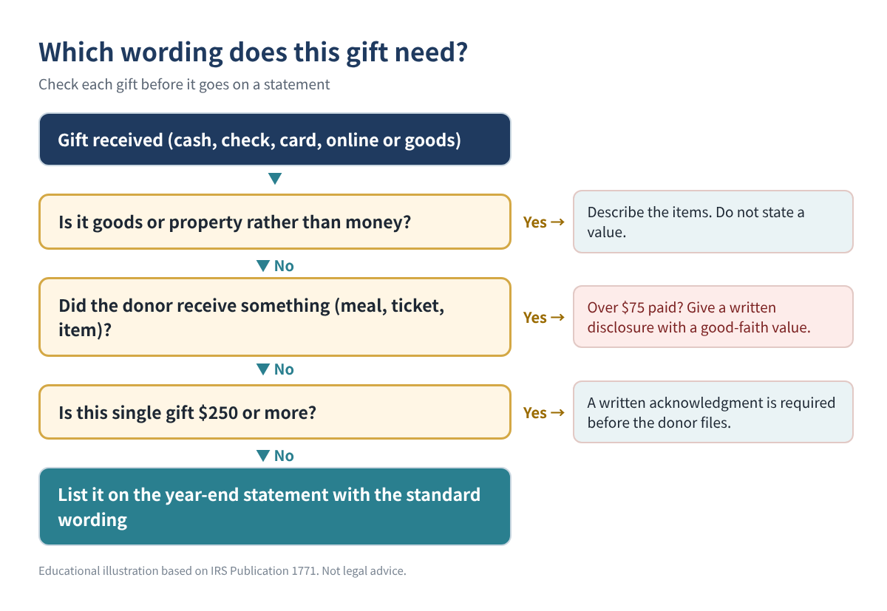
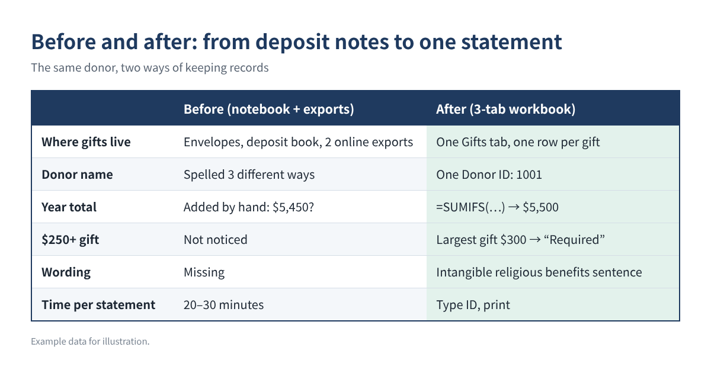
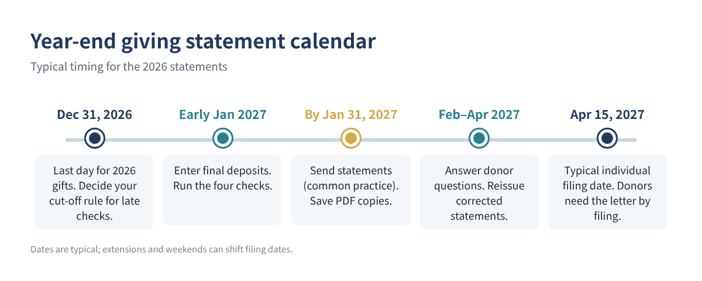

Every January, the church treasurer or nonprofit volunteer gets the same question from dozens of people: "Can I have my giving statement for last year?" If your records live in offering envelopes, a deposit notebook and a few online-giving exports, putting together accurate statements for every donor can take a whole weekend, and one wrong total can mean an awkward phone call.
The good news: the IRS rules for what a statement must say are short, and a simple spreadsheet with three tabs can produce a one-page statement for any donor in seconds. This guide shows the rules, the layout, the exact formulas, and the checks to run before you print.
Who this is for: treasurers, finance teams and volunteers at churches, temples, small charities and community groups that receive tax-deductible gifts and send year-end giving statements (also called contribution statements or donor receipts).
Why it matters more for 2026: starting with tax year 2026, people who take the standard deduction may deduct up to $1,000 of cash gifts to qualifying charities ($2,000 for married couples filing jointly). Donors who never asked for a receipt before may ask this year, so expect more requests in January 2027.
A donor cannot deduct any single contribution of $250 or more without a written acknowledgment from your organization. The IRS lists the required content:
| Required item | What to write | Example |
|---|---|---|
| Organization name | Your legal name as registered | Example Community Church |
| Amount of cash gifts | Total and/or each gift with dates | $5,200 (52 gifts) |
| Noncash gifts | Description only, no value | “2 boxes of books” |
| Goods or services | Statement that none were provided, or a description and good-faith estimate | Dinner valued at $60 |
| Religious organizations | Statement that benefits were only intangible religious benefits (if true) | Standard church sentence |
Table 1. Content of a written acknowledgment (IRS Pub. 1771). Example values are illustrations only.
Two details trip up many treasurers. First, separate gifts are not added together for the $250 test: weekly offerings of $100 are each under $250, even if they total $5,200 for the year. A donor still needs a bank record or a written receipt for every cash gift, so a year-end statement listing every gift helps everyone. Second, the acknowledgment must be contemporaneous: the donor must have it by the earlier of the date they file their return or the return's due date (including extensions). That is why most organizations send statements in January.
You do not need an IRS form. A letter, postcard, email or computer-generated statement is acceptable, and one annual statement can cover many gifts. Do not put the donor's Social Security number on the statement; the IRS does not require it.

You can do this in Excel or Google Sheets. Use one workbook per calendar year.
Enter your organization's legal name, address and EIN, the statement year, the signer's name and title, and your standard wording. For a church, the usual wording is: "No goods or services were provided in exchange for these contributions other than intangible religious benefits." List your funds (General, Building, Missions, Benevolence and so on) so you can choose them from a drop-down.
One row per giver or household: A Donor ID, B name as it should appear on the statement, C mailing address, D email. Use a simple number (1001, 1002…) and write it on the offering envelope or online-giving profile. Then add three formula columns (row 2 shown; copy down):
E Total for the year: =SUMIFS(Gifts!$E:$E, Gifts!$B:$B, A2) F Largest single gift: =MAXIFS(Gifts!$E:$E, Gifts!$B:$B, A2) G $250 acknowledgment: =IF(F2>=250, "Required", "Recommended")
One row per gift, entered from each deposit: A date, B donor ID, C fund, D method (cash, check, card, online, stock, goods), E amount (cash gifts only), F value of anything the donor received (dinner ticket, T-shirt), G description of noncash items (no value). Add two helper columns:
H Disclosure flag: =IF(AND(E2>75, F2>0), "Quid pro quo - disclose", "") I Deductible part: =MAX(0, E2-F2)
| Date | Donor ID | Fund | Method | Amount | Received | H flag | I deductible |
|---|---|---|---|---|---|---|---|
| 01/04 | 1001 | General | Check | $100 | $0 | $100 | |
| 03/15 | 1001 | Building | Online | $300 | $0 | $300 | |
| 05/09 | 1002 | Missions | Cash | $150 | $60 | Quid pro quo - disclose | $90 |
| 11/30 | 1003 | General | Goods | $0 | $0 | $0 (described) |
Table 2. Gifts tab with the two helper columns. All rows are example data.
Column H matters because when a donor pays more than $75 and receives something in return, the IRS requires your organization to give a written disclosure: a good-faith estimate of what they received and a note that only the excess is deductible. The penalty for skipping it is $10 per contribution, up to $5,000 per fundraising event or mailing.
Put the donor ID in cell B2. Everything else fills itself:
Name: =XLOOKUP($B$2, Donors!$A:$A, Donors!$B:$B, "Not found") Address: =XLOOKUP($B$2, Donors!$A:$A, Donors!$C:$C, "") Fund total: =SUMIFS(Gifts!$E:$E, Gifts!$B:$B, $B$2, Gifts!$C:$C, A10) Gift list: =FILTER(Gifts!A2:E3000, Gifts!B2:B3000=$B$2, "No gifts") Received: =SUMIFS(Gifts!$F:$F, Gifts!$B:$B, $B$2)
XLOOKUP and FILTER work in Excel 365/2021 and Google Sheets. In older Excel, use VLOOKUP for the name and sort the Gifts tab by donor ID to print the detail. Below the totals, add your standard wording, a line for noncash items ("Description: 3 bags of clothing; no value stated by the organization"), and the signer. Print to PDF, change B2, and repeat.

Run these four tests. Each should return zero or "OK":
Totals tie: =SUM(Donors!E:E) - SUM(Gifts!E:E) Unknown IDs: =SUMPRODUCT((Gifts!B2:B3000<>"")*(COUNTIF(Donors!A:A, Gifts!B2:B3000)=0)) Deposits tie: =SUM(Gifts!E:E) - [total contributions in your accounting software] Wrong year dates: =COUNTIFS(Gifts!A:A, "<1/1/2026") + COUNTIFS(Gifts!A:A, ">12/31/2026")
The deposit test is the most important. If the gift log does not match the contributions recorded in your accounting software for the year, find the difference before anyone gets a statement.
| Donor | Gifts | Total | Largest gift | Needs $250 letter? |
|---|---|---|---|---|
| 1001 (example) | 52 weekly checks + 1 online | $5,500 | $300 | Yes (the $300 gift) |
| 1002 (example) | 12 monthly cash gifts + gala | $1,350 | $150 | Recommended; gala needs disclosure |
| 1003 (example) | Clothing donation | Description only | n/a | Describe items, no value |
Table 3. What the Donors tab shows for three example donors.

No single gift reached $250, so a written acknowledgment is not strictly required for each one, but the donor still needs a bank record or written receipt for every cash gift to claim a deduction. A year-end statement is the easiest way to give them that record.
Yes. The IRS accepts one contemporaneous written acknowledgment, such as an annual summary, for several contributions, as long as it contains the required information.
The deadline is really on the donor: they need it before they file (or by the due date, if earlier). Sending by the end of January is the common practice, and IRS Publication 1771 mentions it.
Low-cost items and token benefits can be ignored under IRS inflation-adjusted limits. The dollar limits change every year, so check the current amounts on IRS.gov before relying on them.
Platform receipts may not include your organization's goods-or-services statement. Many organizations still send one combined statement covering all methods so the donor has a single, complete record.
If you would rather not build the workbook yourself, a ready-made Donation Tracker & Year-End Giving Statements 2026 workbook (Excel, English or English + Korean) is available in our Etsy and Gumroad shops.
This article is for education only and is not tax or legal advice, and it does not guarantee any result. Rules can change; check current IRS guidance or ask a qualified professional about your organization.